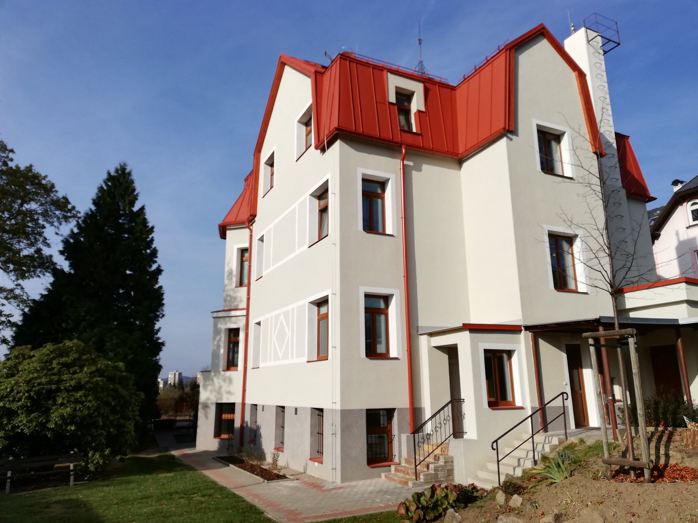
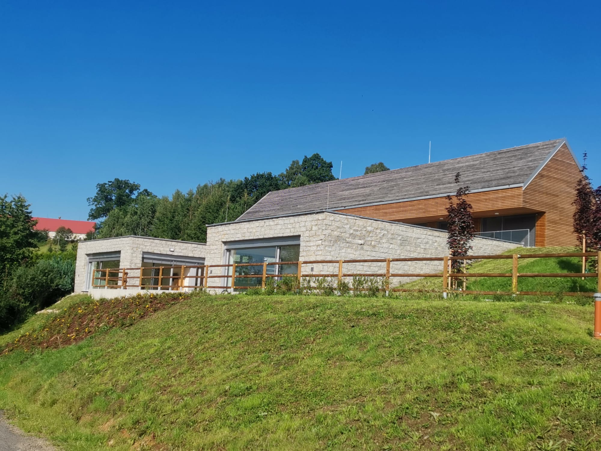

NAŠE SLUŽBY

Centrum denních služeb
Centrum denních služeb poskytuje sociální službu osobám s mentálním postižením a poruchami autistického spektra.

Domov pro osoby se zdravotním postižením
Poskytování takové míry podpory osobám s mentálním postižením a poruchami autistického spektra, aby se jejich život co nejvíce podobal životu běžné populace.

O NÁS
APOSS Liberec, příspěvková organizace pro ambulantní a pobytové
sociální služby, poskytuje podporu osobám s mentálním postižením
a poruchami autistického spektra.
Centrum denních služeb se zaměřuje na rozvoj dovedností, sociálních vztahů a pracovní rehabilitaci. Domov pro osoby se zdravotním postižením nabízí důstojné a bezpečné prostředí pro osoby s mentálním postižením, podporuje jejich soběstačnost a aktivní využívání volného času.
Centrum denních služeb se zaměřuje na rozvoj dovedností, sociálních vztahů a pracovní rehabilitaci. Domov pro osoby se zdravotním postižením nabízí důstojné a bezpečné prostředí pro osoby s mentálním postižením, podporuje jejich soběstačnost a aktivní využívání volného času.
Přečtěte si více
KONTAKTY
Centrum denních služeb
Zeyerova 832/24
460 01 Liberec
460 01 Liberec
tel.: (+420) 485 106 681
Domov pro osoby se
zdravotním postižením
zdravotním postižením
Nová Ves 55
463 31 Chrastava
463 31 Chrastava
tel.: (+420) 482 725 416
.png)